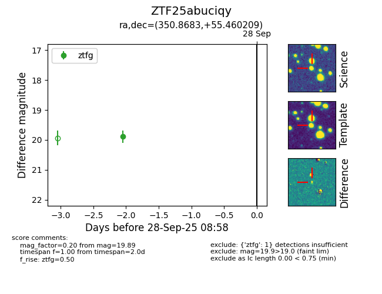

FINK: ZTF25abuciqy
Lasair: ZTF25abuciqy
ALeRCE: ZTF25abuciqy
ZTF25abuciqy (ztf,fink)
equatorial (ra, dec) = (350.8683,+55.46021)
galactic (l, b) = (110.6206,-5.29484)

last ztfg=19.89
1 ztfg detections